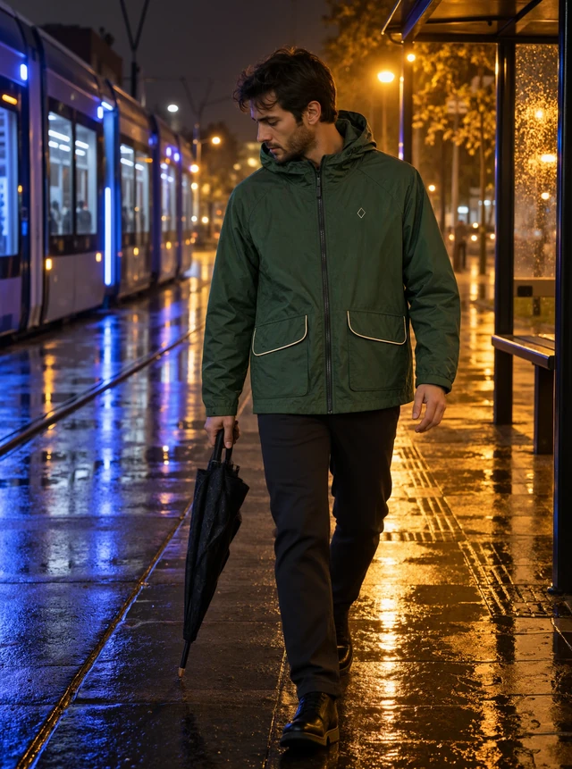

Virtual try onMikhail / Independent AI image creator
Seen
differently.
AI product imagery for brands and creative teams.
I create product scenes, on-model fashion images and campaign variations from your references. Available for ongoing image production and larger batches.
A familiar object. An unexpected world.
Commercial imagery for brands with a point of view.
02 / Food DesignVisual study / 2026
Enter this world ↗Move to change perspective
01 / Selected worlds
Four worlds.
One point of view.
Fashion, food, precious objects and places.
93 images. Every one begins with a reference.


02 / Working together
From a reference
to a repeatable image series.
For brands
Product scenes, on-model fashion imagery and campaign variations built around your product and visual direction.
View a food image case ↗View product and interiors imagery ↗For creative teams
I work from your brief and art direction, prepare agreed image variations and can support recurring production and larger image batches.
View fashion image production ↗A clear first assignment
We agree the brief, image direction, scope, fee, delivery format and review points before production. A focused first assignment can cover one product, one visual direction, two or three final images and one agreed revision. Larger batches can follow the same review process.
Payment options
Payment through EasyStaff or in USDT can be discussed and agreed before work begins. The available method and terms are confirmed for each project.